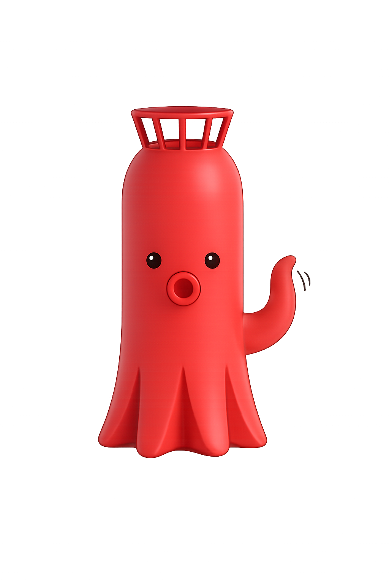

안녕, 등대
등대 지도
실시간 등대 식별
관련 사이트 바로가기
← 지도로 돌아가기

실시간 등대 식별
현재 위치를 기반으로 주변 등대를 실시간으로 식별해줄게.
폰을 돌리면 등대가 실제 방향으로 따라와!
📍
이 기능은 GPS 위치 권한이 필요해
📷
모바일은 카메라 권한이 필요해!
🖱️
데스크탑은 드래그로 방향 탐색하면 돼
시작하기
«
»
✕
◀ 이전
다음 ▶
N 0°
탐색 중...
표시 범위
1.5km
🧭
✕
–
–
상세정보 보기
→
위치 정보를 가져오는 중...
관련사이트 바로가기
✕
☕
커뮤니티 바로가기
→
🏆
스탬프투어 신청하기
→
🛳️
선박 예약하기
→
체험숙소 신청하기
등대 관사에서 즐기는 특별한 하룻밤,
지금 예약하세요
거문도 등대
→
간절곶 등대
→
가덕도 등대
→
 안녕, 등대
안녕, 등대
안녕, 등대
안녕, 등대